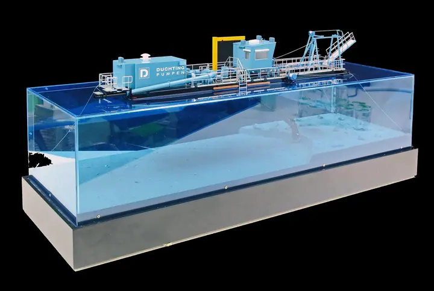

- Início
- Maquetes
- Maquetes Navais
- Maquetes de Embarcações de Apoio
- Draga da Düchting Pumpen
Dragada Düchting Pumpen

1:100Escala
2017Ano
Düchting Pumpen Maschinenfabrik GmbH & Co. KG (Germany)Cliente
As dragas escavam e transportam sedimentos para aprofundar canais de navegação, conquistar terreno ao mar e recuperar vias fluviais.
Construída para o stand da Düchting Pumpen, esta maquete à escala 1:100 mostra a draga acima e abaixo da linha de água, com um fundo marinho em corte que revela a bomba e a tubagem em funcionamento.
Galeria
6 fotos


Pronto para começar a sua maquete?
Capte a essência da sua embarcação. Fale com os nossos mestres maquetistas.